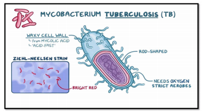

Experiment- 2.b
Aim To perform acid fast staining of the given bacterial cultures.
Theory
Principle- The Ziehl - Neelsen acid-fast staining procedure (developed by Franz Ziehl, a
German bacteriologist, and Friedrich Neelsen, a German pathologist, in the late 1800s) is a
very useful differential staining technique that makes use of this difference in retention of
carbol fuchsin.
- A few species of bacteria in the genera Mycobacterium and Nocardia do not readily
stain either with simple stains or gram stain because they have waxy cell walls
containing mycolic acids.

- However, these microorganisms can be stained by heating them with carbol fuchsin.
Heat drives the stain into the cells. Once the microorganisms have taken up the
carbol fuchsin, they are not easily decolorized by acid alcohol, and hence are termed
acid-fast. This acid-fastness is due to the high lipid content (mycolic acid) in the cell
wall of these microorganisms.
- Acid-fast microorganisms will retain this dye and appear red. Microorganisms that are
not acid-fast, will appear blue due to the counterstaining with methylene blue after
they have been decolorized by the acid-alcohol.
Material Required
-
Miscellaneous:
- Spirit lamp
- Inoculating loop
- Slides
- Distilled water
- Laminar flow etc.
- Stains used:
- Primary Stain - Carbol fuschin Decolourizer - Acid Alcohol (3% HCl in 95% ethyl
alcohol) Counter Stain - Methylene Blue / Malachite Green
Procedure
- Firstly, the bacterial smear is prepared, air dried and should be heat fixed.
- Now, slide is placed on a boiling water bath and covered with a piece of paper
towelling (same size as that of slide).
- Paper is saturated with carbol fuchsin stain and kept for 5 min.
- Now, the slide is removed, cooled and the smear is washed with water for 30
seconds.
- Now, the smear is decolorized by adding acid alcohol (3% HCl in 95% ethyl alcohol),
drop wise for 20 seconds.
- The slide is then rinsed with water for 5 seconds.
- Now, counterstaining is performed with alkaline methylene blue for 1-2 minutes.
(depending upon the concentration of stain)
- Next, rinse the slide with water and blot dry it.
- Observe the slide under microscope at 100x using oil immersion.
Observations
Acid-fast microorganisms will retain carbol fuschin dye and will appear red. Microorganisms
that are not acid-fast, will appear blue due to the counter-staining with methylene blue after
they have been decolorized by the acid-alcohol.
Precautions-
- Staining should be carried out in laminar flow.
- Paper towelling should not be allowed to dry.
- De-colorizer should be added dropwise at one end of slide and allowed to flow
through the smear. It should not be added directly to smear.
- Appropriate timing for staining and de-colorization should be maintained.